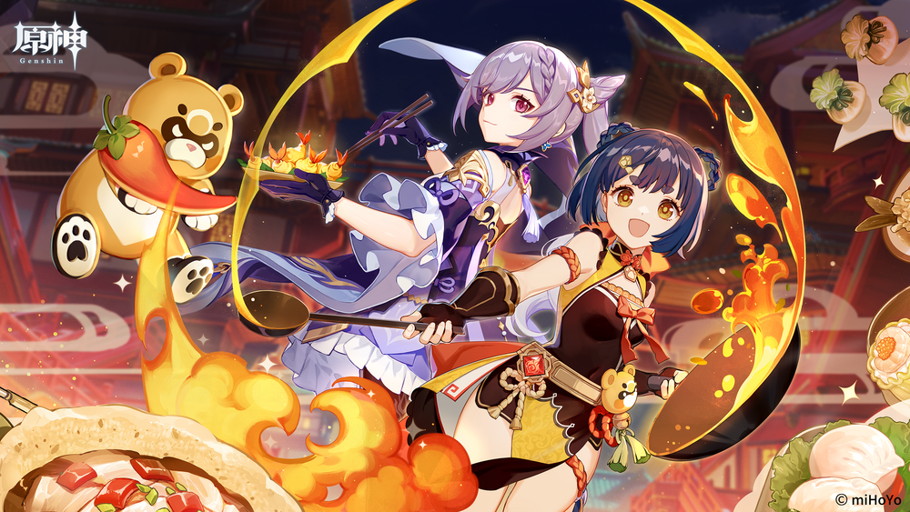

Poster art from Genshin's official Japanese Twitter account for a past cooking event called Moonlight Merriment!
Poster art from Genshin's official Japanese Twitter account for a past cooking event called Moonlight Merriment!
Genshin Impact has been quite a popular game for the past year. It's an open-world game, focused
on action and adventure. But what about the food?
While there are enemies and various structures in this fictional world, there are also many key resources to be found. There are precious stones, loot chests, and most importantly, food ingredients! We can hunt boars, birds and fish for meat, and use plants like berries and flowers as well. We can even buy ingredients like tofu and rice from shopkeepers in different nations! These are then carefully cooked to have different effects, not to mention that they look delicious and so very aesthetically pleasing! There was even a recent event all about cooking, so I'd like to talk a little more about the food!
While there are enemies and various structures in this fictional world, there are also many key resources to be found. There are precious stones, loot chests, and most importantly, food ingredients! We can hunt boars, birds and fish for meat, and use plants like berries and flowers as well. We can even buy ingredients like tofu and rice from shopkeepers in different nations! These are then carefully cooked to have different effects, not to mention that they look delicious and so very aesthetically pleasing! There was even a recent event all about cooking, so I'd like to talk a little more about the food!